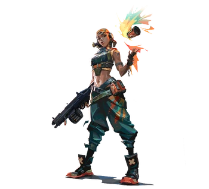

| Tayane Alves es una ingeniera oriunda de Salvador, Bahía, Brasil, con un fuerte entusiasmo por los explosivos y la pintura, generalmente combinados. Con fuertes objeciones hacia las operaciones de Kingdom Corporation en Bahía, Alves participó en la expulsión de la empresa de su estado natal y la obligó a abandonar sus sitios allí, las marcas de sus herramientas mancharon las parcelas como testimonio de sus victorias. Contratada desde entonces para trabajar para el Protocolo VALORANT como su duodécimo agente, "Raze", Alves ahora siembra su caos contra amenazas más grandes para la Tierra. Sin embargo, a medida que la pintura se desvanece de las paredes de Salvador, Raze no puede darse el lujo de dejar su hogar completamente atrás, no sea que Kingdom busque regresar allí.
|  |